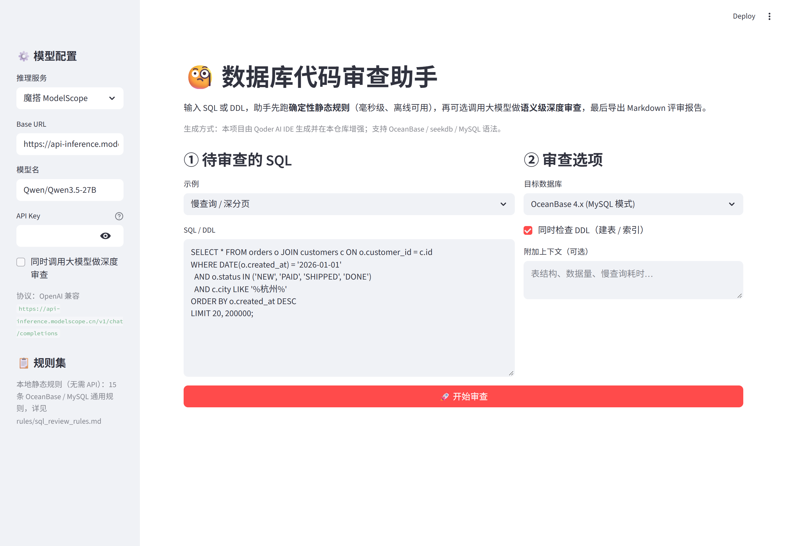
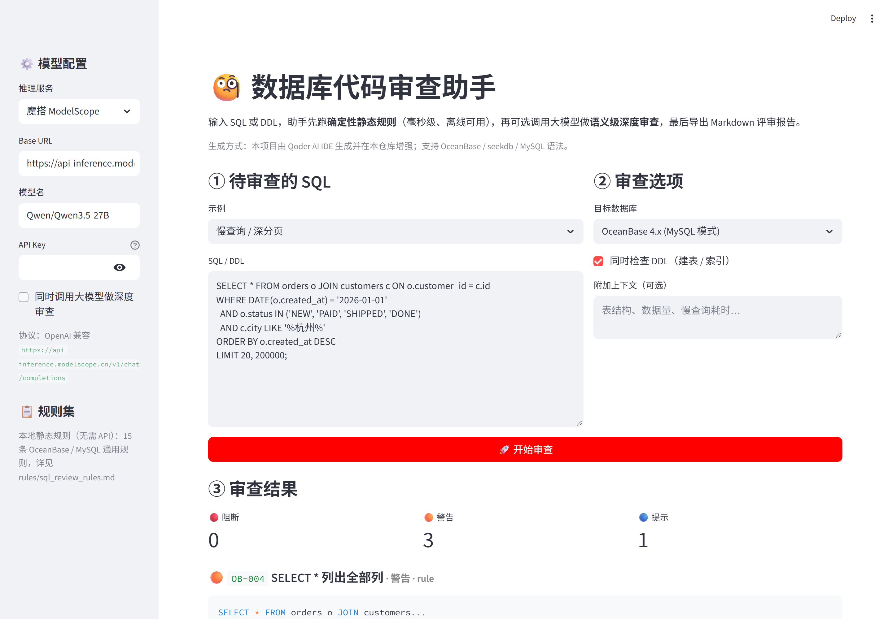

用 Qoder 开发、用 seekdb 做知识与历史存储的 SQL 审查工具：15 条确定性规则 + 大模型深审 + 可导出评审报告。
写完 SQL 不知道会不会全表扫、有没有索引失效；评审时凭经验挑刺，漏项；新人反复踩同样的坑（深分页、索引列套函数、SELECT *）。
把 15 条 OceanBase / MySQL 通用反模式固化成确定性规则（毫秒级、离线、可进 CI），先用 seekdb 混合检索取回官方文档依据，再交给大模型做语义级深审，最后产出可导出的分级评审报告。
| 功能 | 说明 |
|---|---|
| 静态规则扫描 | 15 条规则分 🔴阻断 / 🟠警告 / 🔵提示，每条给出「问题 + 建议 + 命中片段」，可导出 Markdown / JSON |
| seekdb 医书依据 | 每次审查先在 seekdb 里做「向量 + 全文 + RRF」混合检索（融合在 seekdb 内核内完成），把检索到的官方文档片段作为审查依据，界面可展开核对 |
| 审查历史落库 | 每一轮审查结果写回 seekdb 的 qoder_review_log 表，界面里的历史列表是实时从 seekdb 查出来的 |
| 大模型深审 | 可选，走 OpenAI 兼容协议（MiniMax / StepFun / 魔搭皆可），把检索到的依据一起喂给模型 |
| 回归测试 | 22 个规则用例 + 1 个 Streamlit UI 冒烟用例，全部本地可跑 |
CREATE TABLE `dify_knowledge_base` (
id VARBINARY(512) PRIMARY KEY NOT NULL,
document STRING,
embedding VECTOR(512),
metadata JSON,
FULLTEXT INDEX idx_fts (document) WITH PARSER ik,
VECTOR INDEX idx_vec (embedding) WITH(distance=cosine,
type=hnsw, lib=vsag, m=16, ef_construction=200, ef_search=64)
) ORGANIZATION = HEAP;
CREATE TABLE `qoder_review_log` ( -- 审查历史落库
id VARBINARY(512) PRIMARY KEY NOT NULL,
created_at TIMESTAMP(6), engine STRING, finding_count INT,
severity STRING, sql_text STRING, summary STRING, details JSON,
FULLTEXT INDEX idx_review_sql (sql_text) WITH PARSER ik
) ORGANIZATION = HEAP;
SET @search_parm = '{"query":{"query_string":{"fields":["document"],
"query":"..."}},"knn":{"field":"embedding","k":12,
"query_vector":[...]},"rank":{"rrf":{}},"size":4}';
SELECT DBMS_HYBRID_SEARCH.GET_SQL(
'dify_knowledge_base', @search_parm); -- 执行这条即可
向量：本地 bge-small-zh-v1.5 INT8 ONNX（512 维，L2 归一化）；
全文：IK 分词器；
融合：RRF（k=60），由 seekdb 内核完成。
# 1) 克隆 git clone https://github.com/tangtang-cx/ai-ecosystem.git cd ai-ecosystem/qoder # 2) 核心依赖（只有 streamlit，装不上重依赖也不影响启动） pip install -r requirements.txt # 3) 可选：启用真·seekdb + 本地 bge 向量 pip install -r requirements-seekdb.txt python ../dify/seekdb_service/fetch_model.py # 4) 启动（应用会自动在后台拉起 seekdb 知识服务） streamlit run app.py # 5) 自检 python tests/test_rules.py -v # 22 passed python tests/test_app_smoke.py -v # 1 passed


| 输入 | 预期 |
|---|---|
SELECT * FROM orders o JOIN customers c ON o.customer_id = c.id WHERE DATE(o.created_at)='2026-01-01' LIMIT 20, 200000; |
OB-004 / OB-005 / OB-007 等警告；seekdb 能检索到医书片段；审查记录写入 qoder_review_log |
UPDATE orders SET status = 'ARCHIVED'; | OB-001 阻断级问题 |
带 VECTOR(512) + HNSW/IK 索引的建表语句 | 不误报 OB-003（缺主键） |